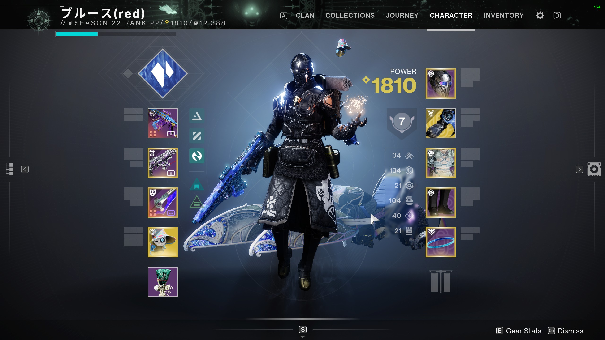

What Came After Reach
Reach was the last good Halo game. Infinite is okay, but nothing will ever live up to the pure cultural monolith that was Bungie's Halo. After Halo was offloaded to 343i to develop, Bungie moved onto Destiny. Destiny was radically different to Halo. It was founded on the principles of its contemporary MMOs, but built with Halo's Blam engine. Destiny keeps some of the ethos of Halo, but is otherwise entirely new. All systems, weapons, abilities, classes, races, and more, are completely new to Destiny. Only with the advent of the 30th Anniversary DLC, did we see crossover between both IPs.
Destiny is what we call a "looter shooter". You shoot things, and they drop loot. Setting aside the decade old debate of the best way to structure this system, there is no doubt it's addicting. Bungie's industry leading gun-play plays a major role in this as well. What's the point in getting loot, if none of it feels good to use? Almost every weapon that Bungie has designed, from Halo CE to Destiny 2: Lightfall, has felt good in the proverbial hand.
Races in Destiny
There are three playable races in Destiny 2:
- Human
- Awoken
- Exo
Humans are as you would expect -- human. Awoken are something... more. When humanity tried to flee to other planets and star systems, all but one vessel was crushed by the Darkness. For most, this meant immediate death. For the Awoken, this meant rebirth. Exos are something else entirely. An unholy offspring of Clovis Bray and the Darkness, they are the combination of the human psyche, Vex radiolaria, and Bray machines.
Classes in Destiny
There are three main classes in Destiny 2:
- Warlock
- Hunter
- Titan
I always have been, and always will be a Warlock main. Space magic has an undeniable allure to it. For a tangible measurement of this draw, take a look at my play time. It's a lot.
